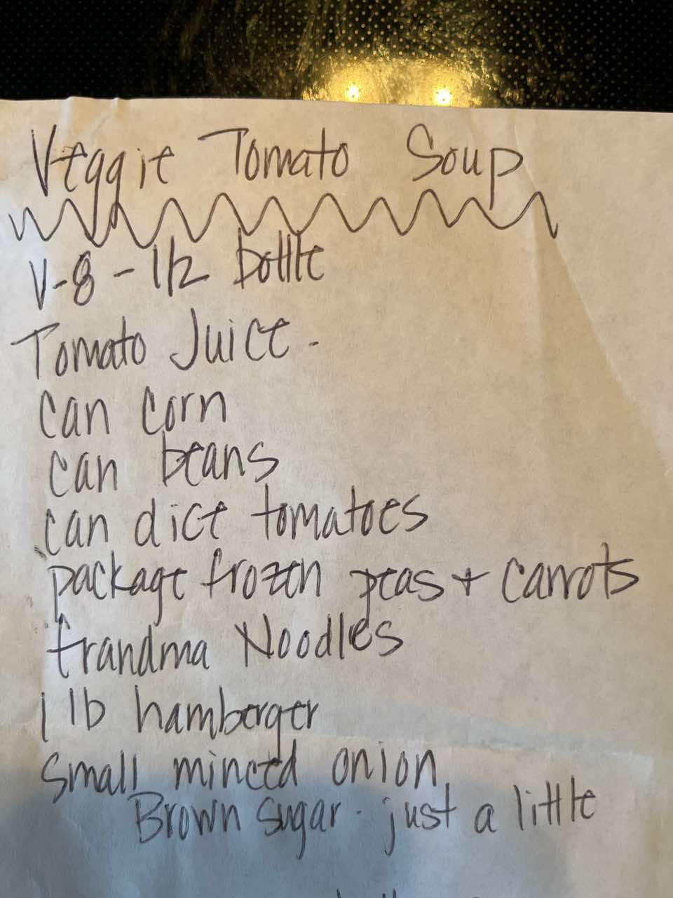

Veggie Tomato Soup
Main DishSoup
PrepPT0S
CookPT0S

Ingredients
- 1/2 Bottle V-8 Tomato Juice
- 1 Can Corn
- 1 can beans
- 1 can diced tomatoes
- 1 package frozen peas + Carrots
- Grandma Noodles
- 1 lb hamburger
- Small minced onion
- Brown Sugar just a little
Directions
- Combine in pan and cool on medium heat
This page includes Schema.org Recipe structured data for recipe importers.